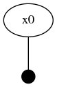
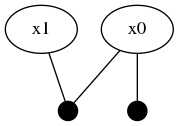
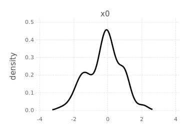
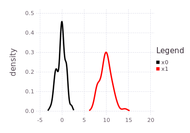
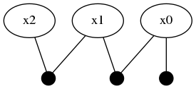
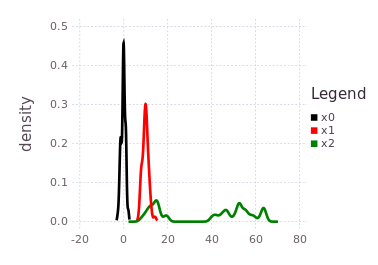
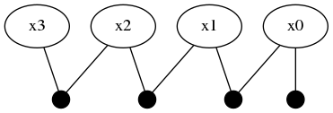
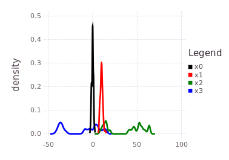
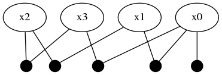
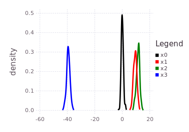

Tutorials
IncrementalInference.jl ContinuousScalar
This tutorial illustrates how IncrementalInference enables algebraic relations between stochastic variables, and how a final posterior belief estimate is calculated from several pieces of information. This tutorial is rather abstract and the user is free to imagine any system of relationships, for example a robot driving in a one dimensional world, or a time traveler making uncertain jumps forwards and backwards in time. The tutorial implicitly shows a multi-modal uncertainty introduced and transmitted. The tutorial also illustrates consensus through an additional piece of information, which reduces all stochastic variable marginal beliefs to unimodal only beliefs. The example will also illustrate the use of non-Gaussian beliefs and global inference. The tutorial also shows how to create user defined functions. Lastly, the tutorial demonstrates how automatic initialization of variables works.
This tutorial requires IncrementalInference v0.3.0+, RoME v0.1.0, RoMEPlotting packages be installed. In addition, the optional GraphViz package will allow easy visualization of the FactorGraph object structure.
To start, the two major mathematical packages are brought into scope.
using Distributions
using IncrementalInferenceThis tutorial calls for multiple variable nodes connected through algebraic functions stochastic uncertainty. User scope Prior, LinearOffset, and MultiModalOffset with arbitrary distributions are defined as:
import IncrementalInference: getSample
struct Prior{T} <: IncrementalInference.FunctorSingleton where T <: Distribution
z::T
end
getSample(s::Prior, N::Int=1) = (rand(s.z,N), )
struct LinearOffset{T} <: IncrementalInference.FunctorPairwise where T <: Distribution
z::T
end
getSample(s::LinearOffset, N::Int=1) = (rand(s.z,N), )
function (s::LinearOffset)(res::Array{Float64},
idx::Int,
meas::Tuple{Array{Float64, 1}},
X1::Array{Float64,2},
X2::Array{Float64,2} )
#
res[1] = meas[1][idx] - (X2[1,idx] - X1[1,idx])
nothing
end
struct MultiModalOffset <: IncrementalInference.FunctorPairwise
z::Vector{Distribution}
c::Categorical
end
getSample(s::MultiModalOffset, N::Int=1) = (rand.(s.z, N)..., rand(s.c, N))
function (s::MultiModalOffset)(res::Array{Float64},
idx::Int,
meas::Tuple,
X1::Array{Float64,2},
X2::Array{Float64,2} )
#
res[1] = meas[meas[end][idx]][idx] - (X2[1,idx] - X1[1,idx])
nothing
endNotice the residual function relating to the two PairwiseFunctor derived definitions. The one dimensional residual functions, res[1] = measurement - prediction, are used during inference to approximate the convolution of conditional beliefs from the sample approximate marginal beliefs of the connected variables.
Guidelines for developing your own functions are discussed here (TBD), and we note that mechanizations and manifolds required for robotic simultaneous localization and mapping (SLAM) has been tightly integrated with the expansion package RoME.jl.
The next step is to describe the inference problem with a graphical model of type IncrementalInference.FactorGraph. The first step is to create an empty factor graph object and start populating it with variable nodes. The variable nodes are identified by Symbols, namely :x0, :x1, :x2, :x3.
# Start with an empty factor graph
fg = emptyFactorGraph()
# add the first node
addNode!(fg, :x0, ContinuousScalar)
# this is unary (prior) factor and does not immediately trigger autoinit of :x0.
addFactor!(fg, [:x0], Prior(Normal(0,1)))Factor graphs are bipartite graphs with factors that act as mathematical structure between interacting variables. After adding node :x0, a singleton factor of type Prior (which was defined by the user earlier) is 'connected to' variable node :x0. This unary factor is taken as a Distributions.Normal distribution with zero mean and a standard devitation of 1. GraphViz.jl can be used to visualize the factor graph structure, although the package is not installed by default. Furthermore, the writeGraphPdf member definition is given at the end of this tutorial, which allows the user to store the graph image in graphviz supported image types.
Graphs.plot(fg.g)
# writeGraphPdf(fg, file="fgx01.pdf") # file="fgx01.png"The two node factor graph is shown in the image below.

Automatic initialization of variables depend on how the factor graph model is constructed. This tutorial demonstrates this behavior by first showing that :x0 is not initialized:
@show isInitialized(fg, :x0) # falseWhy is :x0 not initialized? Since no other variable nodes have been 'connected to' (or depend) on :x0 and future intentions of the user are unknown, the initialization of :x0 is deferred until the latest possible moment. IncrementalInference.jl assumes that the user will generally populate new variable nodes with most of the associated factors before moving to the next variable. By delaying initialization of a new variable (say :x0) until a second newer uninitialized variable (say :x1) depends on :x0, the IncrementalInference algorithms hope to then initialize :x0 with the more information from previous and surrounding variables and factors. Also note that initialization of variables is a local operation based only on the neighboring nodes – global inference will over the entire graph is shows later in this tutorial.
By adding :x1 and connecting it through the LinearOffset and Normal distributed factor, the automatic initialization of :x0 is triggered.
addNode!(fg, :x1, ContinuousScalar)
# P(Z | :x1 - :x0 ) where Z ~ Normal(10,1)
addFactor!(fg, [:x0, :x1], LinearOffset(Normal(10.0,1)))
@show isInitialized(fg, :x0) # trueNote that the automatic initialization of :x0 is aware that :x1 is not initialized and therefore only used the Prior(Normal(0,1)) unary factor to initialize the marginal belief estimate for :x0. The structure of the graph has now been updated to two variable nodes and two factors.

Global inference requires that the entire factor graph be initialized before the numerical belief computation algorithms can be performed. Notice how the new :x1 variable is not yet initialized:
@show isInitialized(fg, :x1) # falseThe RoMEPlotting.jl package allows visualization (plotting) of the belief state over any of the variable nodes. Remember the first time executions are slow given required code compilation, and that future versions of these package will use more precompilation to reduce first execution running cost.
using RoMEPlotting
plotKDE(fg, :x0)
By forcing the initialization of :x1 and plotting its belief estimate,
ensureAllInitialized!(fg)
plotKDE(fg, [:x0, :x1])the predicted influence of the P(Z| X1 - X0) = LinearOffset(Normal(10, 1)) is shown by the red trace.

The red trace (predicted belief of :x1) is noting more than the approximated convolution of the current marginal belief of :x0 with the conditional belief described by P(Z | X1 - X0).
Another ContinuousScalar variable :x2 is 'connected' to :x1 through a more complicated MultiModalOffset likelihood function.
addNode!(fg, :x2, ContinuousScalar)
mmo = MultiModalOffset([Rayleigh(3); Uniform(30,55)], Categorical([0.4; 0.6]))
addFactor!(fg, [:x1, :x2], mmo)
The mmo variable illustrates how a near arbitrary mixture probability distribution can be used as a conditional relationship between variable nodes in the factor graph. In this case, a 40%/60% balance of a Rayleigh and truncated Uniform distribution which acts as a multi-modal conditional belief. Interpret carefully what a conditional belief of this nature actually means.
Following the tutorial's practical example frameworks (robot navigation or time travel), this multi-modal belief implies that moving from one of the probable locations in :x1 to a location in :x2 by some processes defined by mmo=P(Z | X2, X1) is uncertain to the same 40%/60% ratio. In practical terms, collapsing (through observation of an event) the probabilistic likelihoods of the transition from :x1 to :x2 may result in the :x2 location being at either 15-20, or 40-65-ish units. The predicted belief over :x2 is illustrated by plotting the predicted belief (green trace), after forcing initialization.
ensureAllInitialized!(fg)
plotKDE(fg, [:x0, :x1, :x2])
Adding one more variable :x3 through another LinearOffset(Normal(-50,1))
addNode!(fg, :x3, ContinuousScalar)
addFactor!(fg, [:x2, :x3], LinearOffset(Normal(-50, 1)))expands the factor graph to to four variables and four factors.

This part of the tutorial shows how a unimodal likelihood (conditional belief) can transmit the bimodal belief currently contained in :x2.
ensureAllInitialized!(fg)
plotKDE(fg, [:x0, :x1, :x2, :x3])Notice the blue trace (:x3) is a shifted and slightly spread out version of the initialized belief on :x2, through the convolution with the conditional belief P(Z | X2, X3).

Global inference over the entire factor graph has still not occurred, and will at this stage produce roughly similar results to the predicted beliefs shown above. Only by introducing more information into the factor graph can inference extract more precise marginal belief estimates for each of the variables. A final piece of information added to this graph is a factor directly relating :x3 with :x0.
addFactor!(fg, [:x3, :x0], LinearOffset(Normal(40, 1)))Pay close attention to what this last factor means in terms of the probability density traces shown in the previous figure. The blue trace for :x3 has two major modes, one that overlaps with :x0, :x1 near 0 and a second mode further to the left at -40. The last factor introduces a shift LinearOffset(Normal(40,1)) which essentially aligns the left most mode of :x3 back onto :x0.

This last factor forces a mode selection through consensus. By doing global inference, the new information obtained in :x3 will be equally propagated to :x2 where only one of the two modes will remain.
Global inference is achieved with local computation using two function calls, as follows.
tree = wipeBuildNewTree!(fg)
inferOverTree!(fg, tree)
# and visualization
plotKDE(fg, [:x0, :x1, :x2, :x3])The resulting posterior marginal beliefs over all the system variables are:

It is import to note that although this tutorial ends with all marginal beliefs having near Gaussian shape and are unimodal, that the package supports multi-modal belief estimates during both the prediction and global inference processes. In fact, many of the same underlying inference functions are involved with the automatic initialization process and the global multi-modal iSAM inference procedure. This concludes the ContinuousScalar tutorial particular to the IncrementalInference package.